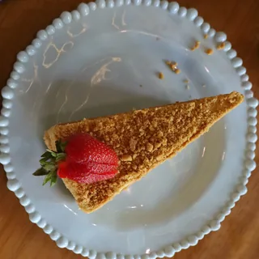
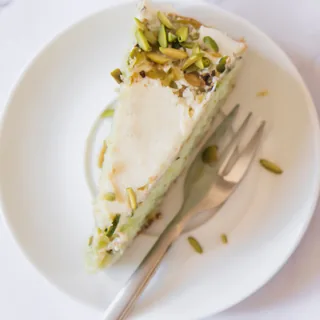
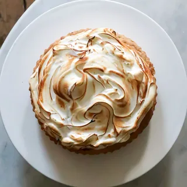
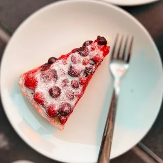
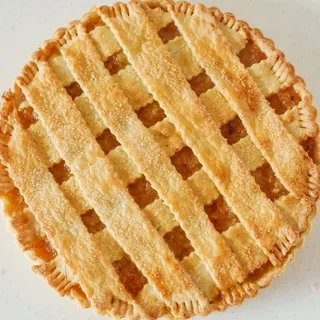
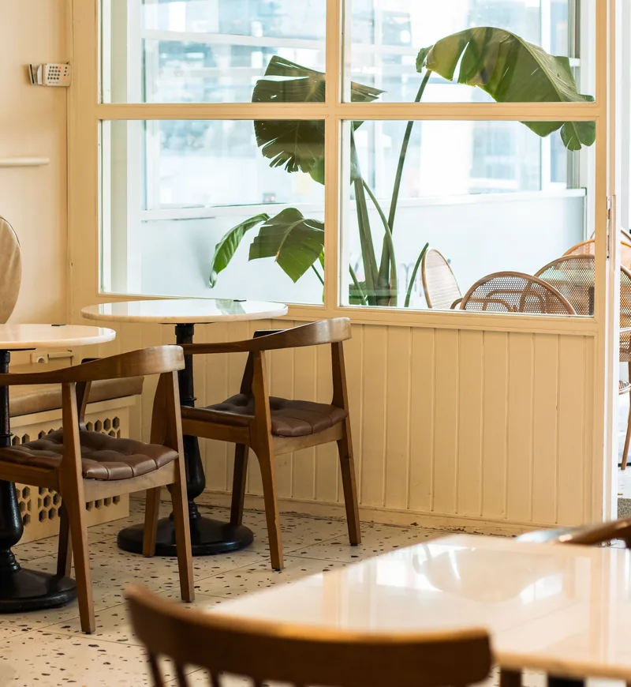
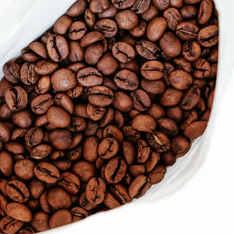
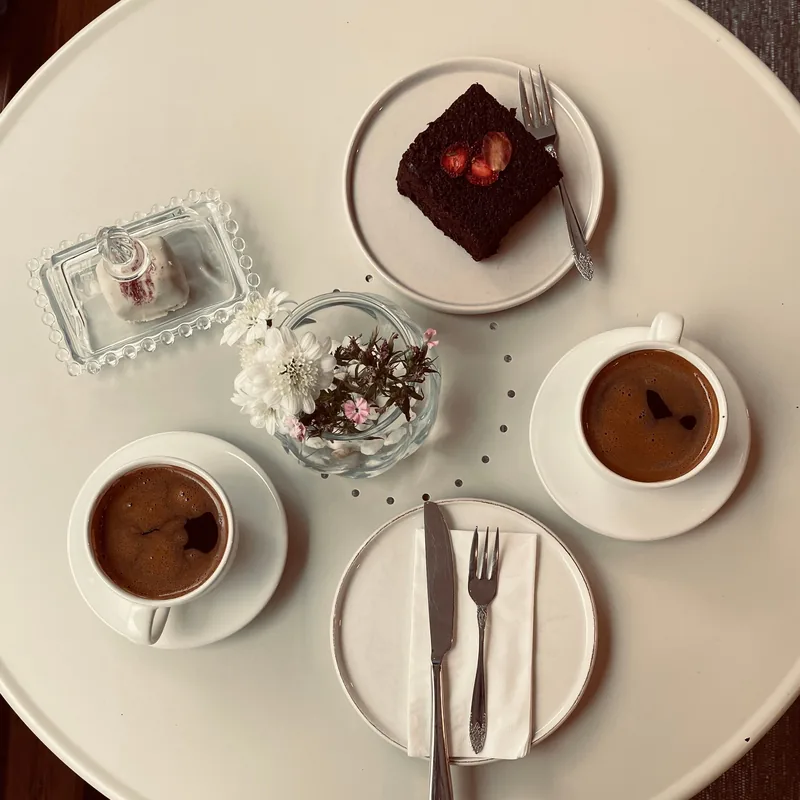

káva, koláč a pokoj na Hlavnej.
Výberová káva, koláče z vlastnej pece a raňajky do 11:30, cez víkend do 13:00. Hlavná 199, Prešov.
Na stole zhora: flat white na mätovom tanieriku, tvarohový koláč s višňami a miska granoly s jogurtom.
lístok
Kávu pripravujeme z čerstvo praženého zrna, raňajky robíme do 11:30 a koláče pečieme každé ráno, kým sa neminú.
- ovsené alebo mandľové mlieko +0,50 €
- bezkofeínová bez príplatku
káva
- espresso1,90 €
- dvojité espresso2,60 €
- cappuccino2,80 €
- flat white3,20 €
- filtrovaná káva3,00 €
bez kávy
- matcha latte3,90 €
- domáca limonáda 0,4 l3,50 €
- čaj v kanvičke2,90 €
- horúca čokoláda3,40 €
raňajky do 11:30, cez víkend do 13:00
- volské oko na kváskovom chlebe6,90 €
sušená šunka, avokádo, reďkovka, bazalka
- granola s jogurtom a višňami6,40 €
aj s kokosovým jogurtom, vtedy je vegánska
- ovsená kaša s pečeným jablkom5,90 €
- raňajkový tanier Okenica7,90 €
vajcia, šunka, syr, zelenina, chlieb a malá káva
slané a sladké k tomu
- maslový croissant2,40 €
- zapečený toast so syrom4,90 €
- koláč z vitríny3,60 až 4,20 €
z našej vitríny
Päť koláčov, ktoré pečieme najčastejšie. Čo je vo vitríne práve dnes, vám povie obsluha.
-

medovník s orechmi
3,90 €Osem tenkých plátov, krém zo zakysanej smotany.
-

pistáciový rez
4,20 €Vláčny korpus, tvarohový krém a sekané pistácie.
-

citrónová tartaletka
3,90 €Kyslý citrónový krém pod opáleným snehom.
-

malinový tvarohový rez
3,80 €bezlepkovýTvaroh, maliny a čučoriedky na mandľovom korpuse.
-

marhuľový mrežovník
3,60 €vegánskyMarhuľový lekvár pod mriežkou z krehkého cesta.
priestor zhora
Svetlá miestnosť s oknami na Hlavnú, rastliny na parapetoch a stoly, pri ktorých sa dá posedieť hodinu aj celé dopoludnie. Takto vyzerá, keď sa na ňu pozriete zo stropu.
- wi-fi zadarmošesť stolov má zásuvku, heslo visí pri pulte
- psy vítanémiska s vodou stojí pri dverách
- kočík ánovchod je bez schodu, detský kútik však nemáme


káva
Zrno pre nás praží malá pražiareň z východu Slovenska, vždy len toľko, koľko za dva týždne minieme. Na mlynčeku striedame dve kávy: jednu čokoládovú do mlieka, druhú ovocnú na filter.
Zrno domov, balíček 250 g11,90 €
stôl pre väčšiu partiu
Od šiestich ľudí vám zložíme stoly pri okne. Narodeniny, rozlúčku alebo poradu do dvadsiatich ľudí dohodneme po telefóne, tortu si môžete priniesť alebo objednať u nás.
- 34miest vnútri
- 12miest na letnej terase

otázky
Čo sa nás hostia pýtajú najčastejšie. Ostatné radi povieme po telefóne.
Dá sa u vás platiť kartou?
Áno, kartou, mobilom aj hodinkami od ľubovoľnej sumy. Hotovosť berieme tiež.
Treba si cez víkend rezervovať stôl?
V sobotu a v nedeľu medzi 9:00 a 12:00 býva plno, vtedy sa rezervácia oplatí. Stôl držíme 15 minút.
Máte niečo bez lepku a bez mlieka?
Vo vitríne je každý deň aspoň jeden bezlepkový a jeden vegánsky koláč. Zoznam alergénov ku každej položke máme pri pulte, pečieme však v jednej kuchyni, stopy lepku a orechov vylúčiť nevieme.
Môžem si vziať kávu so sebou do vlastného pohára?
Áno. Do vlastného pohára máte každú kávu o 0,30 € lacnejšiu.
Dá sa u vás pracovať s notebookom?
Dá. Šesť stolov má zásuvku a Wi-Fi je zadarmo. Cez víkendové raňajky prosíme o pochopenie, stoly vtedy potrebujeme pre hostí na jedlo.
kde nás nájdete
adresa a parkovanie
Kaviareň OkenicaHlavná 199, 080 01 Prešov
vchod z ulice, zelené okenice
Autom zaparkujete na platenom parkovisku pri Toryse, odtiaľ ste u nás za 3 minúty. Stojan na bicykle je hneď pred vchodom.
Otvoriť Hlavnú ulicu v mapáchotváracie hodiny
| pondelok až piatokdnes | 7:30 až 19:00 |
|---|---|
| sobotadnes | 8:30 až 19:00 |
| nedeľadnes | 9:00 až 17:00 |
rezervácie
Toto je ukážka, číslo je vymyslené a nič sa nevytáča.